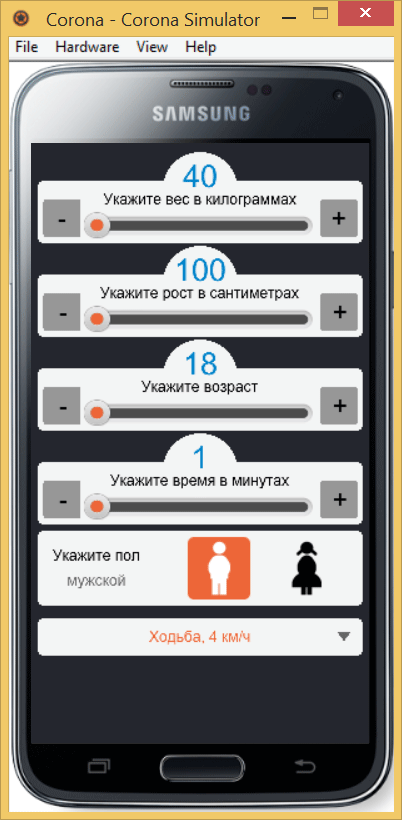
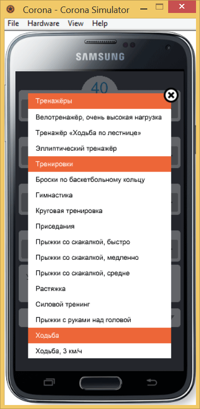

Список
Список нам требуется для вывода всех активностей сгруппированных по разделам. Задача разбивается на три части:
- подготовить данные;
- вывести их в виде списка;
- сохранять данные при выборе пользователем и отображать результат выбора.
Предварительно сделаем отображение текущей активности в нашей сцене. Поскольку пользователь ещё ничего не вводил, то следует установить исходные данные по умолчанию. Задаём три переменные.
activity_name = "Ходьба, 4 км/ч"; -- название активности
activity_factor = 3; -- коэффициент активности
activity_index = 147; -- номер в спискеПеременная activity_name хранит текст для отображения; activity_factor — коэффициент, участвующий в расчётах калорий; activity_index нам требуется для прокрутки списка к выбранному пункту.
Теперь просто отображаем текст из переменной согласно нашему дизайну.
-- добавляем новую группу
activityGroup = display.newGroup();
-- прямоугольник со скруглёнными уголками
display.newRoundedRect(activityGroup, display.contentCenterX, 790, w, 60, 10):setFillColor(244/255);
-- рисуем треугольник
display.newPolygon(activityGroup, 500, 790, {500, 452, 520, 452, 510, 466}):setFillColor(0.4);
-- выводим текст из переменной activity_name в прямоугольник
activityText = display.newText(activityGroup, activity_name, display.contentCenterX, 790, native.systemFont, 24);
-- изменяем цвет текста
activityText:setFillColor(237/255, 103/255, 57/255);
-- обработчик нажатия
activityGroup:addEventListener("touch",
function(event)
composer.showOverlay("scenes.activity", {
isModal = true, -- модальное окно
effect = "fade", -- эффект появления
time = 400, -- время появления
});
end
);Все элементы мы уже до этого задействовали, за исключением display.newPolygon, с помощью которого добавляем небольшой треугольник справа от списка. Треугольник носит только декоративный характер, не более.
Для перехода к другой сцене мы воспользуемся не composer.gotoScene, как делали это ранее, а composer.showOverlay. Эта функция выводит одну сцену поверх другой, тем самым мы получаем имитацию диалогового окна. Появление новой сцены можно сделать с эффектом перехода, чтобы она выводилась не мгновенно, а плавно, в течение какого-то времени. Смотрим что получилось в итоге.

Вид приложения с выбранной активностью
Внутри папки scenes создаём два файла — data.lua и activity.lua. В первом файле будет храниться таблица с данными для списка, а второй файл их отображать в нужном нам виде. Сокращённое содержимое data.lua показано ниже.
local activityData = {
{ factor=0, name="Аэробика", category=1 },
{ factor=5, name="Аэробика, низкая нагрузка", category=0 },
{ factor=6.5, name="Аэробика, средняя нагрузка", category=0 },
{ factor=7, name="Аэробика, высокая нагрузка", category=0 },
{ factor=0, name="Музыка", category=1 },
{ factor=4, name="Игра на барабанах", category=0 },
{ factor=2, name="Игра на духовых инструментах", category=0 },
{ factor=2.5, name="Игра на клавишных", category=0 },
{ factor=2, name="Игра на струнных инструментах", category=0 },
}Здесь: factor — значение коэффициента; name — название активности; category — категория (1) или нет (0). Категория нужна для разделения всего списка на тематические блоки. Так проще и нагляднее пользователю ориентироваться в большом списке. Если category равна 1, то мы делаем текст заголовком блока, выбирать его в таком случае нельзя.
Структура activity.lua показана ниже. Вызываем наши данные из data.lua через функцию require и присваиваем их переменной data. Весь остальной код вставляем внутрь метода create и не забываем добавлять объекты в группу sceneGroup, иначе сцена со списком корректно закрываться не будет.
local composer = require("composer");
local widget = require("widget");
local data = require("scenes.data"); -- вызов файла data.lua
local scene = composer.newScene();
function scene:create(event)
local sceneGroup = self.view;
-- наш код
end
scene:addEventListener("create", scene);
return scene;Сам процесс создания списка с данными состоит из четырёх шагов.
- Добавление виджета widget.newTableView заданного размера.
- Заполнение списка данными через цикл for i = 1, #data do. Там же в списке устанавливаем цвет заголовка блока и цвет основного текста.
- Отображение списка в нашей функции onRowRender заданным шрифтом и цветом. Заметьте, что на предыдущем шаге список лишь формировался, но не выводился. Это нужно проделать отдельно.
- Обработка нажатия на элемент списка в нашей функции onRowTouch. В переменных следует сохранить данные выбранного пункта и отобразить название активности.
Код activity.lua целиком показан ниже.
local composer = require("composer");
local widget = require("widget");
local data = require("scenes.data"); -- вызов файла data.lua
local scene = composer.newScene();
function scene:create(event)
local sceneGroup = self.view;
-- полупрозрачный прямоугольник
display.newRect(sceneGroup, display.contentCenterX, display.contentCenterY, display.contentWidth, display.contentHeight):setFillColor(37/255, 39/255, 46/255, 0.7);
-- отображаем список
function onRowRender(event)
local row = event.row;
local id = row.index;
-- выводим текст заданным шрифтом
row.activityText = display.newText(data[id].name, 24, 24, native.systemFont, 22);
row.activityText.anchorX = 0; -- задаём точку отсчёта координат
if (data[id].category == 1) then
row.activityText:setFillColor(1); -- для заголовков цвет белый
else row.activityText:setFillColor(0) -- для остального текста чёрный
end
row:insert(row.activityText);
return true
end
-- нажатие на пункт списка
function onRowTouch(event)
local row = event.row
if (event.phase == "release") then
-- присваиваем переменным выбранные значения
activity_index = row.index;
activity_name = data[activity_index].name;
activity_factor = data[activity_index].factor;
activityText.text = activity_name;
composer.hideOverlay("fade", 400); -- закрываем окно
end
end
-- создаём список
local activityList = widget.newTableView {
top = 70, left = 40, -- координаты
width = 460, height = 850, -- размеры
onRowRender = onRowRender,
onRowTouch = onRowTouch,
}
sceneGroup:insert(activityList); -- добавляем список в группу sceneGroup
-- добавляем в список данные
for i = 1, #data do
if (data[i].category == 1) then isCategory = true;
else isCategory = false;
end
if (isCategory == true) then
rowColor = { default = {237/255, 103/255, 57/255} };
else rowColor = { default = {1} }
end
activityList:insertRow{
rowHeight = 50,
isCategory = isCategory,
rowColor = rowColor,
}
end
-- прокручиваем список к выбранному ранее пункту
if (activity_index > 1) then
activityList:scrollToY({y=-(activity_index-2)*50});
end
-- кнопка закрытия списка
close = display.newImage(sceneGroup, "img/close.png", 500, 76);
close:addEventListener("touch", function(event)
if event.phase == 'ended' then
composer.hideOverlay("fade", 400);
end
end
);
end
scene:addEventListener("create", scene);
return scene;Вот как выглядит наш список при его вызове.

Прокручиваемый список
Кроме самого списка сделаем кнопку для его закрытия, это позволит убирать список без обязательного выбора. Используем обычную картинку, при нажатии на которую вызываем функцию composer.hideOverlay. Также добавим полупрозрачный фон совпадающий с размерами нашего контента, чтобы затемнять нижележащую сцену. Так будет выглядеть профессионально и стильно. Уровень прозрачности легко регулируется через альфа-канал.
См. также
Документация по widget.newTableView()
http://docs.coronalabs.com/api/library/widget/newTableView.html
Документация по display.newPolygon()
http://docs.coronalabs.com/api/library/display/newPolygon.html
Эффекты перехода между сценами
http://docs.coronalabs.com/api/library/composer/gotoScene.html#transition-effects
Руководство по созданию списка
http://coronalabs.com/blog/2014/03/04/tutorial-advanced-tableview-tactics/

Все материалы сайта доступны по лицензии Creative Commons «Attribution-NonCommercial» («Атрибуция — Некоммерческое использование») 4.0 Всемирная, если не указано иное.